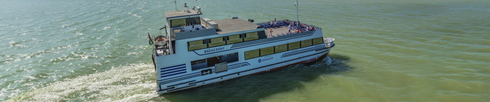

Balatoni hajók
A balatoni hajózás a XIX. század közepétől követhető nyomon, amikor megkezdődött a rendszeres gőzhajózás a tó medencéjén. Ma programunkban részletesen megismerheti a jelenleg forgalomban lévő és a már kivont hajókat, az úszó munkagépeket, valamint a névutóbbiak történelmi név-változtatásait. A tulajdonosok adatai is rendelkezésre állnak, ha azok ismertek, így átfogó képet kap a balatoni vízi közlekedés teljes palettájáról.
